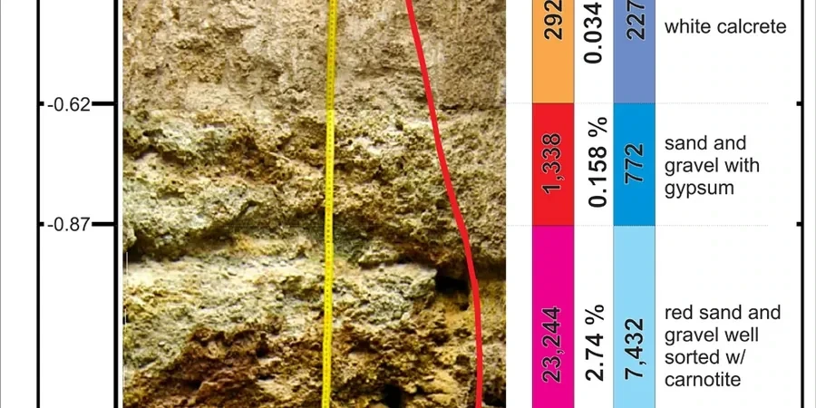

Brisbane’s dynamic urban growth demands geotechnical insight that balances innovation with reliability. Our firm delivers comprehensive site characterization, foundation design, subsurface investigation, and construction monitoring tailored to the region’s unique conditions. We integrate consolidated regional experience with calibrated equipment and code-compliant reports to support projects from high-rise towers in the CBD to suburban developments on the outskirts. Whether assessing bearing capacity, groundwater behavior, or seismic resilience, our team ensures that every recommendation is grounded in local context and technical rigor. From initial feasibility studies through to final compliance documentation, we provide the clarity and confidence needed to navigate Brisbane’s subsurface challenges.

Technical reference image — Brisbane
Scope of work
Brisbane’s geology is dominated by the Neranleigh-Fernvale Beds and Brisbane Tuff in the west and north, while the coastal plain features Quaternary alluvium and floodplain deposits. The typical soil profile includes stiff to hard clays (often high plasticity), interbedded sands and gravels, and weathered rock at depth. The site-specific variability is significant: residual soils derived from volcanic and sedimentary rocks can exhibit collapsible or expansive behavior, particularly in the western suburbs. Groundwater levels are generally shallow (2–6 m below surface) in the river valleys, requiring careful dewatering and excavation support. Flooding potential from the Brisbane River and its tributaries adds complexity to foundation design, while seismic hazard is low but not negligible, with AS 1170.4 governing design. Understanding these conditions is critical for reliable foundation solutions and slope stability assessments.
Area-specific notes
Our team combines deep regional experience with a fully calibrated laboratory and field equipment fleet, enabling precise soil classification and strength testing. We maintain close coordination with Brisbane City Council and local contractors to streamline approvals and construction phases. Every report is prepared in strict adherence to Australian Standards and local planning requirements, ensuring technical defensibility. Our familiarity with the Neranleigh-Fernvale Beds, Brisbane Tuff, and alluvial deposits allows us to anticipate site-specific challenges and deliver cost-effective, risk-informed solutions for projects of all scales.
In Australia, geotechnical practice follows AS 1726 (geotechnical site investigations), AS 4678 (earth-retaining structures), and AS 1170.4 (seismic actions). Foundation design adheres to AS 2159 (piling) and AS 2870 (residential slabs and footings). For soil testing, we reference AS 1289.6.3.1 (SPT), AS 1289.6.1.1 (CBR), and AS 1289 series for laboratory methods. Groundwater monitoring and In-Situ (e.g., Menard pressuremeter) follow industry-standard procedures to ensure code compliance and defensible reporting.
Quick answers
What typical soil conditions should I expect for a development in Brisbane’s western suburbs?
Western suburbs often feature residual soils from the Neranleigh-Fernvale Beds, including stiff to hard clays and weathered rock. These soils can be collapsible or expansive, requiring careful moisture control and foundation design. A thorough site investigation with appropriate In-Situ (e.g., Menard pressuremeter) is recommended to assess bearing capacity and settlement potential.
How does the shallow groundwater in Brisbane’s floodplains affect foundation design?
Shallow groundwater (2–6 m below surface) increases the risk of excavation instability, buoyancy, and seepage. Dewatering systems and watertight retaining structures are often necessary. Foundation types such as piles or rafts may be required to resist uplift and differential settlement. Our reports include detailed groundwater monitoring and recommendations tailored to your site’s hydrogeology.
What Australian Standards govern geotechnical investigations in Queensland?
The primary standard is AS 1726 – Geotechnical Site Investigations, which covers field and laboratory testing, reporting, and classification. Foundation design follows AS 2159 (piling) or AS 2870 (residential slabs). Seismic considerations are addressed by AS 1170.4. All our work complies with these codes to ensure regulatory acceptance and structural safety.
Do you provide geotechnical support for both residential and commercial projects in Brisbane?
Yes, we serve the full spectrum of projects, from single residential homes to high-rise commercial towers. For residential work, we focus on slab and footing design per AS 2870, while commercial projects often require deep foundations, retaining walls, and groundwater control. We tailor our investigation scope and reporting to match project scale and complexity.